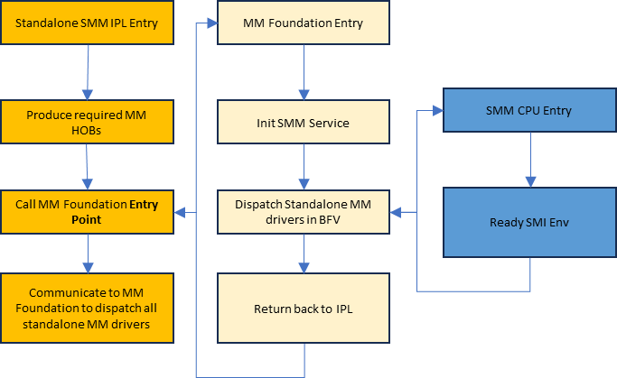

1 MM Introduction
1.1 SMM and MM Overview
This section describes the main differences between Traditional SMM and Standalone MM. A detailed comparison of the Traditional MM and Standalone MM load process is described in the PI Specification sections "Initializing Management Mode in MM Traditional Mode" and "Initializing Management Mode in Standalone Mode" respectively.
In the following comparison, we will use "SMM" to represent "Traditional SMM" and "MM" to represent "Standalone MM".
SMM Driver:
- Module type is
DXE_SMM_DRIVER. The entry point of an SMM driver follows the UEFI specificationEFI_IMAGE_ENTRY_POINT. - SMM driver can access the DXE, UEFI, and SMM services during initialization, but can only access SMM services during runtime.
- Launches at the DXE phase, because SMM might have dependencies on DXE.
- Multiple rounds of dispatch depend on the
gEfiEventDxeDispatchGuidevent. - Uses PEI HOBs.
- No memory protection before the end of DXE:
PiSmmCoreinstalls theEDKII_PI_SMM_MEMORY_ATTRIBUTES_TABLEat thegEfiEndOfDxeEventGroupGuidevent. - Can access non-MMRAM memory types at runtime:
EfiReservedMemoryType,EfiRuntimeServicesData, andEfiACPIMemoryNVS.
MM Driver:
- Module type is
MM_STANDALONE. The entry point of an updatable MM driver follows the PI specificationMM_IMAGE_ENTRY_POINT. - A Standalone MM driver must only refer to MM servers.
- Launches early in the PEI phase.
- Two rounds of dispatch depend on the
gEventMmDispatchGuidevent. Refer to section 1.2 MM Driver Dispatch for details. - Cannot access any non-MMRAM memory unless the
MmUnblockMemoryRequest()API is called for the non-MMRAM memory. Refer to section 1.4 Non-MMRAM Access for details. - Uses MM self-owned HOBs. Refer to section 1.5 MM HOBs for details.
- Early memory protection in PEI:
StandaloneMmCoreinstalls theEDKII_PI_SMM_MEMORY_ATTRIBUTES_TABLEonce the second round of dispatch finishes. Refer to section 1.7 Memory Protection for details.
1.2 MM Driver Dispatch
For traditional SMM drivers, they are dispatched within multiple rounds: The dispatch is hooked on the gEfiEventDxeDispatchGuid event, which is signaled by DXE Core when DXE Core finishes one round of dispatch.
StandaloneMmIpl is a PEIM responsible for locating and loading StandaloneMmCore. All the MM drivers are dispatched by StandaloneMmCore in the 2-round dispatches in X86:
- 1st round:
StandaloneMmCoredispatches MM drivers in its IPL entry point running in non-SMM mode. It exits toStandaloneMmIplafterPiSmmCpuStandaloneMminstalls the SMI handler in its entry point. - 2nd round:
StandaloneMmIpltriggers SMI (gEventMmDispatchGuid) to informStandaloneMmCoreto dispatch the remaining MM drivers in SMM mode in its SMI entry point.
The following flow chart describes the MM driver dispatch flow:

Figure 1: MM Driver Dispatch Flow
1.3 MM Communication Buffer
MM communication buffer is specific memory regions used for communication between the Non-MM and MM environment.
Traditional SMM Communication Buffer can be allocated by each DXE driver. It can be any EfiReservedMemoryType, EfiRuntimeServicesData or EfiACPIMemoryNVS runtime buffer. SMI Handlers directly access them. There is no protection of access/call out before EndOfDxe.
Standalone MM introduces a more secure method for handling MM Communication Buffer. StandaloneMmIpl is responsible for allocating and unblocking a fixed size of runtime memory (non-MMRAM) for CommBuffer (MdeModulePkg/Include/Guid/MmCommBuffer.h) between non-MM and MM. StandaloneMmCore allocates a shadowed communication buffer in MMRAM accordingly. The CommBuffer will be used by the MM Communication PPI and Protocol.
Every communication flow is as follows where steps #2, #3, and #4 run inside MM:
- Non-MM code modifies the
CommBufferand triggers MMI. StandaloneMmCorecopies the content to the shadowed one in MMRAM and calls the corresponding MMI handler.- MMI handler accesses the shadowed
CommBufferin MMRAM. - Upon returning of the MMI handler,
StandaloneMmCorecopies the updated content in the shadowed buffer to theCommBufferin non-MMRAM. - Upon returning to non-MM mode, non-MM code reads the
CommBuffer.
By following the above, the CommBuffer used by the Communication PPI/Protocol is referred to as the Primary Buffer. Additionally, other non-MMRAM memory for specific MM driver usage are termed Non-Primary Buffer. Those buffer can be pointed from the MM HOBs, or pointed from the CommBuffer. Both the Primary Buffer and Non-Primary Buffer used by MM drivers should be validated for accessibility before use.
1.4 Non-MMRAM Access
Any memory outside of the MMRAM (non-MMRAM) that needs to be accessed by MMI handlers must be explicitly declared as "Unblock Mem" through MmUnblockMemoryRequest() (MdePkg/Include/Library/MmUnblockMemoryLib.h).
Requirements for marking the non-MMRAM as "Unblocked":
- The memory must be allocated and unblocked in the Post-Mem phase and before the gEfiPeiMmCommunicationPpiGuid is installed.
- The memory must be runtime-accessible and cannot be reclaimed by the OS.
StandaloneMmIpl builds the corresponding EFI_HOB_RESOURCE_DESCRIPTOR in the MM HOB list for all unblocked non-MMRAM memory access. Any non-MMRAM memory region that is not described by EFI_HOB_RESOURCE_DESCRIPTOR in the MM HOB list is not accessible from SMM mode.
1.5 MM HOBs
PEI HOBs are used by the traditional SMM. The lifecycle of traditional SMM HOBs is limited to the boot phase, and once entering the runtime phase, HOBs can no longer be accessed or used in the SMM. In contrast, Standalone MM is designed to maintain the validity of its self-owned HOBs throughout the entire lifecycle, including the runtime phase.
StandaloneMmIpl is not required to pass the entire PEI HOB list to the SMM foundation. Instead, it must create and pass a specific subset of HOBs that are essential for the operation of the Standalone MM environment. Overall, MM self-owned HOBs can be divided into two categories: MM Foundation HOBs and MM Platform HOBs.
1.5.1 MM Foundation HOBs
The MM Foundation HOBs are a set of HOBs that are created by the common logic within the StandaloneMmIpl. These HOBs provide the necessary information about the firmware environment and memory regions that the MM Core and drivers will interact with. The following HOBs are created by StandaloneMmIpl common logic; hence, they should NOT be created by the platform part:
- Single GUIDed (
gEfiSmmSmramMemoryGuid) HOB to describe the MM regions. - Single
EFI_HOB_TYPE_MEMORY_ALLOCATION(gEfiHobMemoryAllocModuleGuid) HOB to describe the MM region of MM Core. - Single
EFI_HOB_TYPE_FVto describe the BFV where MM Core resides if there is no MM FV HOB created by the platform. - Multiple
EFI_HOB_RESOURCE_DESCRIPTORHOBs to describe the non-MM regions and their access permissions. All accessible non-MM regions should be described byEFI_HOB_RESOURCE_DESCRIPTORHOBs. - Single
EFI_HOB_TYPE_MEMORY_ALLOCATION(gMmProfileDataHobGuid) HOB to describe the MM profile data region. This region is to log the non-MM regions marked with theMM_RESOURCE_ATTRIBUTE_LOGGINGattribute inEFI_HOB_RESOURCE_DESCRIPTORHOBs once they are accessed in MM. - Single GUIDed (
gMmCommBufferHobGuid) HOB to identify the MM Communication buffer (CommBuffer) in the non-MM region. - Multiple GUIDed (
gSmmBaseHobGuid) HOBs to describe the SMM base address of each processor. - Multiple GUIDed (
gMpInformation2HobGuid) HOBs to describe the MP information. - Single GUIDed (
gMmCpuSyncConfigHobGuid) HOB to describe how BSP synchronizes with APs in x86 SMM. - Single GUIDed (
gMmAcpiS3EnableHobGuid) HOB to describe the ACPI S3 enable status. - Single GUIDed (
gEfiAcpiVariableGuid) HOB to identify the S3 data root region in x86. - Single GUIDed (
gMmStatusCodeUseSerialHobGuid) HOB to describe whether the status code uses the serial port or not.
1.5.2 MM Platform HOBs
In addition to the MM Foundation HOBs, the StandaloneMmIpl will consume the MmPlatformHobProducerLib/CreateMmPlatformHob() to create platform-specific HOBs that are necessary for the Standalone MM environment. These HOBs provide information and configuration details that are unique to the platform on which the system is running. The creation of these HOBs ensures that the MM environment is properly configured to interact with the platform's hardware and firmware features.
1.6 Communication between SMM/Non-SMM
The following mechanisms are provided for communication between SMM and Non-SMM:
Using
CommBufferwith ProtocolEFI_MM_COMMUNICATION_PROTOCOLor PPIEFI_PEI_MM_COMMUNICATION_PPI:- Requires dependency on the
EFI_MM_COMMUNICATION_PROTOCOLorEFI_PEI_MM_COMMUNICATION_PPI. - Triggers an SMI when sharing data between SMM and Non-SMM code.
- Requires dependency on the
Using "Unblock Mem":
- Must meet the usage requirements. Refer to section 1.4 Non-MMRAM Access for details.
Using MM Guided HOBs:
- For data sizes < 64KB: Embed the data directly into the HOB.
Option #1 is suitable when the data cannot be finalized before launching MM or when the data flow is bidirectional between SMM and Non-SMM code. Option #2 is necessary for ASL code to pass data to the SW SMI handler. It is also an alternative solution to avoid triggering an SMI for latency considerations. Option #3 is ideal when the data size is small than 64K and it can be finalized before launching MM and the data flow is unidirectional between SMM and Non-SMM code.
But in cases where silicon initialization code does not want to rely on the communication PPI, the data size to be passed to MM exceeds 64KB, and the memory cannot be runtime-accessible due to the requirement for Runtime Non-SMM invisibility, then options #1 and #2 are not applicable. Option #3 requires splitting the data into multiple Guided HOBs, which increases code complexity due to the need to reassemble the data in MM. To simplify this, a fourth method was introduced as below:
- Using MM Memory Allocation HOBs with BSData and Non-Zero GUID:
- Memory Producer (PEIM): Create a Memory Allocation HOB pointing to a BSData memory region and assign a Non-Zero GUID to the corresponding HOB.
- MM Core: Migrate the Memory Allocation HOB into MMRAM by copying the data from Non-MMRAM to MMRAM. Refer to
MigrateMemoryAllocationHobs()inEdk2/StandaloneMmPkg/Core/StandaloneMmCore.c. - Memory Consumer (MM Drivers): Retrieve the memory from the Memory Allocation HOB using its assigned Non-Zero GUID.
1.7 Memory Protection
The PiSmmCpuStandaloneMm driver creates a page table used in MM mode according to the EFI_HOB_RESOURCE_DESCRIPTOR in the MM HOB list. The newly created page table controls memory accessibility in MM.
The following table outlines the differences in memory protection policies between the traditional SMM and the Standalone MM. This comparison is particularly relevant for x86 systems and highlights the security enhancements provided by Standalone MM.
| Items | Policy | SMM | MM |
|---|---|---|---|
| DRAM | CommBuffer & Unblock Mem: non-executable, Writable. Others Mem: Non-Present | EndOfDxe | End of CpuMm.Entrypoint |
| MMIO | Non-Executable, Writable | EndOfDxe | End of CpuMm.Entrypoint |
| SMRAM | Code: Read-only, Executable. Data: Writable, non-executable | EndOfDxe | End of MmIpl.Entrypoint |
| Code Check (MSR[4E0h].BIT2) | Forbidden call-out | EndOfDxe | End of CpuMm.Entrypoint |
| SMRR (MSR[1F2h]) | Forbidden access-in | End of CpuMm.Entrypoint | End of CpuMm.Entrypoint |
| SMM Paging State (MSR[141h].BIT0) | Lock SMM paging state | EndOfDxe | End of MmIpl.Entrypoint |